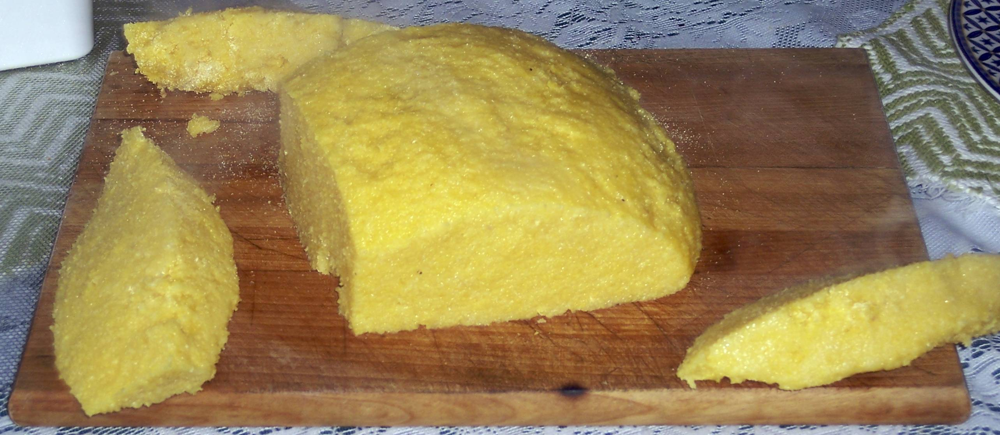

Romanian Mamaliga Recipe

Description
Delicious Romanian Recipe, easy to do and ready in 20 minutes!
Ingredients
- 250g malai(polenta)
- 1 liter water
- 1 teaspoon salt
- Optional: 1 spoon of butter
- Optional: Sour cream - for serving
- Optional: cottage cheese - for serving
Steps
- Put the water to boil and add the salt
- When the water boils, slowly put the 250g malai(polenta) and don't stop stirring with a whisk
- Let it cook for 15-20 minutes(or more if it needs), and stirr with a wooden spoon every ~5 minutes or more often
- Do the taste check, and if it's soft it means it's done! Add the butter and stirr for 1-2 minutes until you can no longer see it/feel it while stirring
- Turn off the stove and prepare the plates to serve. All you need additionally is sour cream and cottage cheese. Enjoy!
Back to Homepage